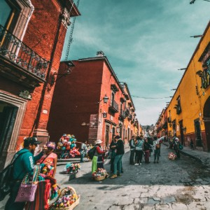
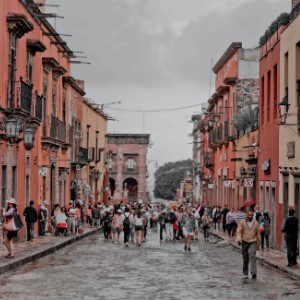

Tours
Join us for a tour of Cozumel! The island is full of surprises and wonderful adventures. There is never a boring day here. It is always well spent with good food, historic buildings, and beautiful scenery. Many of the buildings date back to the 1800s and have been refurbished with bright, colored paints, reminiscent of what they once were. There is so much to see, so don't forget to book your scooter so you can see everything during your stay.
Sites to See
The Isle of Stones

Main Street Market
Queso Volcano
